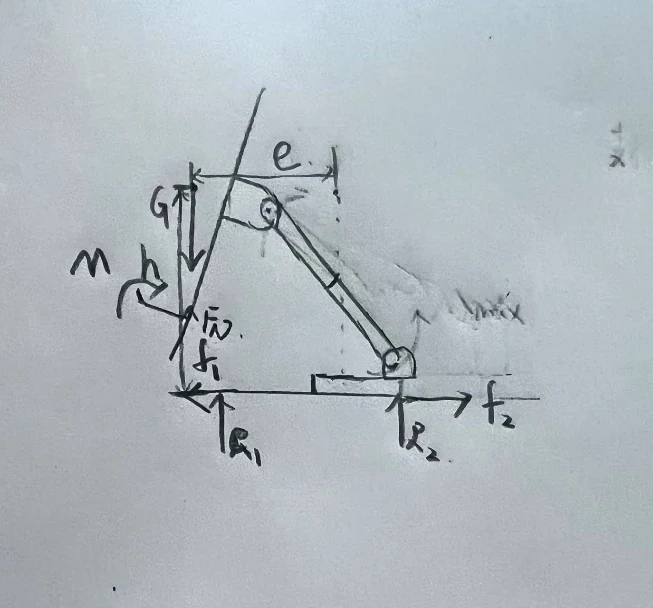
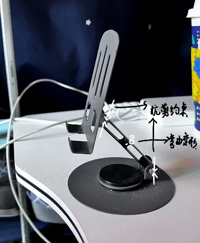
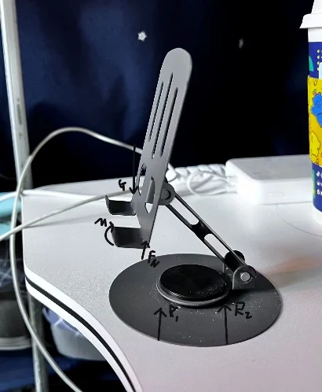
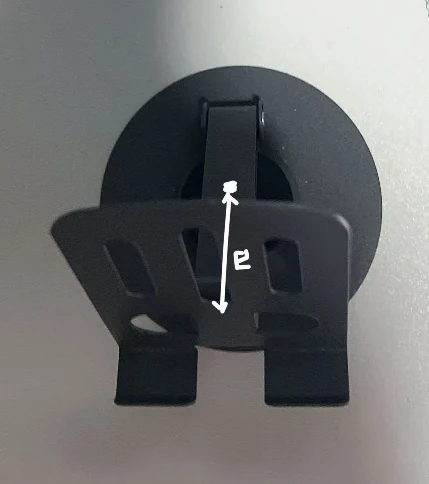

大连交通大学 · 智能建造23
我的原作生活中的力学现象与设计理念解释 —— 折叠式手机支架
王建伟
（1）表达力学问题
意义
折叠式手机支架的核心力学意义是通过合理结构设计，在承受手机重力（竖向荷载）时保持自身稳定，同时控制支架关键部位的弯曲、剪切变形在允许范围，避免因变形过大或失稳导致手机滑落，保障使用安全性与便利性。
影响因素
荷载因素：手机的重量（集中荷载大小）、手机放置的偏心距（荷载作用点与支架支撑中心的距离）。
结构因素：支架支撑杆的截面尺寸（宽度、厚度）、截面形式（实心 / 空心）、折叠节点的刚度、底座的支撑面积。
材料因素：支架材质的弹性模量（如塑料、金属的刚度差异）、材料的抗剪强度与抗弯强度。
几何因素：支架展开后的倾角、支撑杆的长度、底座的长宽比（影响质心位置）。
趋势
随着手机尺寸增大（荷载增加），支架设计呈现 “轻量化 + 高刚度” 趋势：在减少材料用量的同时，通过优化截面形式（如空心截面）、强化节点连接、扩大底座支撑范围，平衡自重与承载能力。
力学图示

荷载：手机重力 G，作用于手机重心处（距支架支撑面竖向高度 h，水平偏心距 e）。
支撑反力：底座与接触面的竖向反力 R₁、R₂（对称分布时 R₁=R₂=G/2），水平静摩擦力 f₁、f₂（平衡偏心荷载产生的水平分力，f₁=f₂=G・e/h）。
内力：支撑杆承受弯矩 M（跨中最大弯矩 Mmax=G・L/4，L 为支撑杆受力段长度）与剪力 FN（FN=G/2）。
变形：支撑杆产生竖向弯曲变形 δ（跨中变形最大），底座无明显位移（因支撑面积足够，满足稳定条件）。
（2）生活中体现



配文说明
荷载传递：手机的重力 G 通过接触面向支架支撑杆传递，支撑杆将荷载分散至底座，最终由桌面的竖向反力 R₁、R₂平衡。
变形特征：支撑杆作为悬臂 - 简支组合构件，在竖向荷载作用下产生向下的弯曲变形，跨中部位变形最明显（因弯矩最大）；折叠节点因需传递剪力，设计为刚性连接，无明显相对转动。
稳定保障：底座通过足够的支撑面积 S，使支架整体质心落在支撑范围内，同时桌面的静摩擦力平衡偏心荷载产生的水平趋势，避免支架倾倒。
（3）对照《结构设计原理》内容
1. 受弯构件的设计原理
课程关联：《结构设计原理》中受弯构件（如钢筋混凝土梁）需通过优化截面形式、配置受力钢筋抵抗弯矩和剪力，控制弯曲变形。
支架应用：支架的支撑杆相当于受弯构件，其设计与受弯构件原理一致：
截面优化：多数金属支架的支撑杆采用空心矩形截面（而非实心截面），类比《结构设计原理》中 “工字形截面比矩形截面抗弯效率更高” 的理念 —— 在相同材料用量下，空心截面的惯性矩更大，抗弯刚度更高，可有效减小弯曲变形（对应书中 “不同截面形式的影响” 章节核心观点）。
刚度匹配：对于大尺寸手机（荷载较大），支架会增加支撑杆的厚度或采用金属材质（提高弹性模量 E），类比受弯构件通过增大截面惯性矩 I 或选用高标号材料，降低弯曲变形（符合梁变形公式 δ∝L⁴/(EI)）。
2. 结构稳定的设计原理
课程关联：《结构设计原理》中结构稳定需保证 “质心在支撑范围内”“避免失稳破坏”，如柱的稳定设计需控制长细比，基础设计需扩大底面积。
支架应用：
质心控制：支架底座设计为矩形大面接触，展开后支架与手机的组合质心落在底座支撑面积内，类比基础设计中 “扩大基底面积降低基底应力、提高抗倾覆稳定性” 的原理（对应书中 “质心” 章节 “物体质心越低、支撑面积越大，稳定性越强” 的结论）。
抗倾覆设计：当手机偏心放置时（e>0），水平静摩擦力平衡倾覆趋势，类比《结构设计原理》中 “抗侧力构件（如剪力墙）平衡水平荷载” 的设计逻辑，避免支架因偏心荷载导致的失稳。
3. 节点的抗剪设计原理
课程关联：《结构设计原理》中构件节点（如梁 - 柱节点）需具备足够的抗剪承载力，避免节点先于构件破坏，如钢筋混凝土节点配置箍筋强化抗剪能力。
支架应用：折叠式支架的转轴节点采用金属合页或一体成型的刚性连接，类比节点箍筋的作用 —— 通过提高节点抗剪刚度，传递支撑杆之间的剪力，避免节点发生相对滑动或转动，保证支架整体受力协同（对应书中 “剪切与扭转” 章节 “节点抗剪是结构协同工作的关键” 的核心观点）。
这是一份便于网页阅读的原作视图，保留提交内容的文字、图片和基本顺序；公开页面不显示学号。